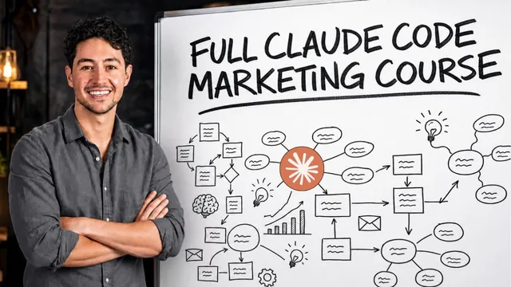

Claude Code 마케팅 풀 코스 (6시간)

원본 영상 보기 →
- 병목 하나가 전체 산출을 정해요
- 프로세스는 사람이 설계하고 AI는 많이 쏘게 해요
- 프롬프트, 스킬, 루프, 루틴 순서로 올려요
한 줄 요약
Nick(Nick Saraev)이 6시간 동안 Claude Code 하나로 광고 소재, 개인화 카피, 리드 응대, 대시보드, 후속 연락까지 마케팅 전 과정을 직접 만들어 보여 주는 풀 코스예요. 핵심은 모든 시스템을 프롬프트에서 시작해 스킬, 루프, 루틴 순서로 올리되 사업의 병목이 있는 곳에만 만든다는 거예요.
전체 내용 정리
가입하고 앱을 깔고 나면 Claude Code는 이렇게 생겼어요
Nick은 코딩이나 AI 경험이 없어도 따라올 수 있는 강의라고 소개해요. 본인 마케팅 사업이 지난달 $500,000가 넘는 매출을 냈고 코딩 학위 없이 무료 유튜브 영상으로 배웠다고 해요. 순서는 설치와 설정, 마케팅 기능과 프레임워크, 프롬프트에서 루틴까지 4단계, 그다음 구축, 마지막이 유지보수예요.
시작은 claude.com 가입이에요. Google 계정이나 이메일로 로그인하고 개인 용도로 쓴다고 고른 뒤 월 구독을 선택해 결제 수단을 넣어요. Claude Code는 유료라서 무료 계정으로는 Claude만 쓸 수 있고 코드 쪽은 못 써요. Nick은 월 $24 캐나다달러를 내면 그보다 훨씬 많이 돌려받는다고 보지만 형편이 안 되면 영상을 먼저 보고 나중에 가입해도 된다고 해요. 가입 뒤에는 운영체제에 맞는 데스크톱 앱을 내려받아 설치하고 같은 계정으로 로그인하면 끝이에요.
앱 안에는 사실상 제품이 둘 있어요. Home은 일반 Claude이고 Code 탭이 Claude Code인데 Nick은 Code 탭을 쓰라고 권해요. 세션을 열기 전에는 메시지 수, 총 토큰, 모델별 사용량이 한눈에 보여요. Anthropic이 화면을 계속 실험해서 자주 바뀌기 때문에 모든 버튼을 다루지는 않겠다고 먼저 말해 둬요.
첫 실습은 Artifacts(Claude가 만들어 주는 웹 페이지)로 내 소개 페이지를 만드는 거예요. 새 세션에서 "build a code artifact, a self-contained web page published with the artifact tool"에 내 이름을 주제로 붙여 요청하면 Claude가 페이지 목적을 되물어요. 답하면 아래쪽에 자동완성 제안이 뜨는데 Tab으로 받아들이고 실행 허가 창에서는 Deny, Always allow, Allow once 중에 골라요. Nick은 Always allow를 택해요. 완성되면 우측 상단 버튼으로 기본 브라우저에서 열고 Share에서 "anyone with the link"를 고른 다음 링크를 시크릿 창에 붙여 로그인 없이 열리는지 확인해요. 이 방식이면 호스팅을 신경 쓰지 않아도 돼서 대시보드나 고객 프로젝트 공유에 쓸 만하다고 해요.
그다음은 Customize 메뉴예요. Skills(자주 쓰는 긴 프롬프트를 /이름 한 번으로 불러오는 재사용 지시서)는 지식노동에 돌리는 프로그램 같은 것이고 이 강의에서 가장 중요한 부분이라고 Nick은 강조해요. 기본으로 morning, setup, writing style, skill creator가 들어 있고 morning을 쓰면 아침 브리핑을 HTML artifact로 만들거나 평일 반복 작업으로 걸 수 있어요. Connectors는 Gmail, Google Drive, Slack, Spotify 같은 앱을 Claude에 연결하는 곳이고 Plugins에는 Anthropic과 파트너가 만든 재무, 법무, 코드 리뷰 묶음이 있어요. Memory에는 내 직업이나 마케팅 채널, 사업 우선순위를 적어 둘 수 있어요.
Routines는 More 탭에 있어요. 일정이나 API, webhook으로 시작되는 템플릿화된 skill을 내 컴퓨터 밖 클라우드에서 돌리는 기능이라 자동화의 마지막 단계라고 설명해요. 세션 하단에서는 실행 환경도 고를 수 있어요. 주로 Local과 Cloud를 쓰고 Local 설정의 환경 변수 칸에 로그인 정보나 API 키를 저장해 두면 Claude가 스크립트에서 꺼내 써요. Cloud는 Anthropic의 컴퓨터에서 도는 환경이고 팀이 같은 서버와 환경 변수를 쓰게 맞출 때 유리하다고 해요.
권한 모드는 다섯 가지예요. manual은 모든 동작 전에 물어서 5초마다 확인해야 하니 추천하지 않고 accept edits는 기존 파일 수정만 허용해요. plan은 변경 없이 계획만 세우고 auto는 위험하다고 판단할 때만 물어요. bypass permissions는 아무것도 묻지 않는데 Nick은 이 모드를 즐겨 쓰되 보안이나 비밀번호 작업은 하지 않고 마케팅 작업만 한다는 전제를 달아요. 대부분 사람에게는 auto를 권해요.
일하면서 자주 쓰게 될 조작도 짚어요. 파일과 폴더 통째로 첨부하기, 음성 입력(사람은 말이 타이핑보다 세네 배 빠르다고 해서 Nick은 요즘 대부분 음성으로 프롬프트를 넣어요), 작업을 끊지 않고 옆에서 질문하는 /btw, 같은 걸 반복하면 Esc로 중단하기가 있어요. 반복 실행은 loop로 하는데 "1분마다 Hey Nick"을 시키고 멈출 때는 "stop the loop"라고 말하면 돼요. 사용량 화면에서는 $20 플랜 기준으로 5시간 한도 9%가 찼고 한 스킬이 한도의 67%를 쓴 것까지 보여요.
모델은 Sonnet 5로 시작해요. 이 모델은 컨텍스트가 967,000 토큰이고 그중 112,000을 써서 12%가 찼어요. Nick은 컨텍스트가 길어질수록 한도를 빨리 쓰고 성능도 떨어진다고 보고 가득 차면 요약해 맨 위에 두는 compact가 일어난다고 설명해요. effort 슬라이더는 보통 medium에서 high를 권하고 우측 하단의 컨텍스트 창으로 메시지, 도구, skills, memory가 얼마씩 차지하는지 확인해요.
자동화는 병목 하나를 고쳐 주는 일이고 순서는 프롬프트, 스킬, 루프, 루틴이에요
Nick은 모든 사업이 marketing, sales, fulfillment, admin 순으로 흐른다고 보고 이 강의는 marketing에 집중해요. 틀로는 RACE를 써요. Reach, Acquire, Close, Expand의 약자인데 앞의 둘이 마케팅이고 뒤의 둘이 세일즈예요.
자동화 레버는 여섯 개로 나눠요. Reach에는 이미지·영상·오디오를 AI로 만드는 creative와 뉴스레터나 콜드 메일에 상대 정보를 녹이는 copy가 있어요. Acquire에는 폼을 낸 뒤 30초 안에 대화를 시작하는 speed to lead가 들어가요. 폼 질문을 10개에서 3~4개로 줄이고 나머지는 Claude가 조사하게 하는 booking percentage도 여기 속해요. 남은 둘은 자율 후속 연락과 데이터 수집·대시보드예요. Nick은 월 $3M 규모 홈서비스 기업이 speed to lead로 월 $9M이 된 사례를 들어요.
공장 비유가 이 강의 전체의 기준이에요. 하루에 원자재 100개가 들어오고 A 단계는 100개를 처리하는데 B 단계는 10개밖에 못 하면 공장 전체 산출은 10개예요. A를 200개로 키워도 총량은 그대로고 B를 20개로 늘려야 두 배가 돼요. Nick은 마케팅도 똑같아서 가장 약한 단계가 전체를 정한다고 봐요. 그래서 크리에이티브가 병목이면 광고 생성 시스템을, 예약이 병목이면 speed to lead를 만들고 병목이 아닌 곳을 자동화하면 수익 효과가 작다고 해요.
프로세스는 사람이 설계해야 한다는 것도 Nick의 주장이에요. "Make me great ads"처럼 던지면 AI가 질문만 하다 헤매요. 단계 3개가 각각 0.8이면 0.8×0.8×0.8로 51.2%밖에 안 되지만 설계와 품질 판단을 사람이 맡고 AI는 중간 실행만 하면 80% 안팎까지 올라간다고 해요. 그래서 화이트보드에 프로세스를 먼저 그리고 AI는 많이 쏘게 하고 사람이 고르는 구조로 가요.
승급 순서는 이렇게 정리해요. 프롬프트는 매번 직접 입력하니 느리고 같은 말을 두 번 이상 하는 순간 skill로 바꿔요. 스킬을 사람 없이 돌리면 loop인데 내 컴퓨터가 켜져 있어야 하고 환경이 바뀌면 깨지기 쉬워요. 이 loop를 클라우드로 옮긴 것이 routine이고 입력은 schedule, API, webhook 중 하나가 필요해요. 작은 스킬을 여러 개 만들어 순서대로 실행하는 마스터 스킬로 묶는 방식도 권해요.
정적 광고는 HTML과 SVG로 절차적으로 찍어 내요
이 시스템은 아이디어와 유통은 충분한데 광고를 만들 손이 부족할 때만 의미가 있어요. 흐름은 잘 되는 포맷을 템플릿으로 저장하고 변수(niche, offer, angle)를 넣어 조합을 만들게 한 뒤 사람이 고르는 거예요. 실제로는 이미 성과가 검증된 포맷을 써야 하지만 Nick은 데모용으로 Stripe 광고를 골라요.
실습 순서는 이래요. 먼저 Facebook Ads Library에서 지역 All로 두고 정치 광고를 제외한 뒤 Stripe를 검색해요. 광고를 크게 열어 스크린샷으로 3개를 찍어 "ad formats for claude" 폴더에 모아요. 세로형 모바일 광고와 "Create a link. Sell anywhere" 광고가 들어 있고 브랜드색 그라디언트, 로고, 짧은 문구, 버튼이 공통 특징이에요. 새 대화에 이미지를 붙이고 음성 입력으로 길게 설명하면서 폴더째 넘겨요.
제품 정보는 Nick이 운영하는 AI 자동화 프로그램(Maker School)으로 줘요. 90일 안에 첫 고객이 생기지 않으면 환불해 주는 프로그램이고 타깃 고객층도 함께 알려 줘요. Claude는 이미지를 직접 그리지 못하니 ImageMagick 같은 값싼 전통 이미지 처리와 HTML, CSS, SVG 필터로 템플릿 규칙을 만들어 광고를 찍어요. Nick은 첫 결과가 70% 정도라고 평가하고 그라디언트와 글자 간격을 고쳐 달라고 해요. 목표는 매번 완벽한 광고가 아니라 많이 만들어 시장이 고르게 하는 거예요.
고치는 방법이 인상적이에요. 말로 계속 수정하는 대신 "슬라이더로 글꼴과 위치를 바꿀 수 있는 웹 페이지를 만들어 달라"고 해요. 브라우저에서 그라디언트 각도, 노이즈(grain)의 크기와 blend 방식, 글자 간격, 여백, CTA 모양을 직접 만져요. 글꼴은 20개 후보를 받아 Red Hat Display를 골랐고 문구는 "Land your first client in 90 days or it's free"로 정해요. 설정은 JSON으로 내보내 Claude에 붙여 넣어요.
확정한 설정으로는 "다른 CTA와 다른 룩으로 50개를 만들고 팀이 쓸 수 있는 artifact로 만들어 달라"고 요청해요. 그라디언트 각도가 대부분 세로라서 각도를 다양하게 하고 마음에 드는 것만 체크해 한 번에 내려받게 고쳐요. 영상 광고가 개당 $500이던 시대에서 개당 $2 수준으로 내려가 10배, 100배 더 테스트할 수 있다고 Nick은 전망해요.
그다음이 승급이에요. 대화를 "스킬로 합쳐 달라"고 하면 SKILL.md가 만들어지고 /maker school ads로 부르게 돼요. 새 채팅에서 "10개 만들어 줘, 제품은 Clarvo(clarvo.io)고 끝나면 contact sheet를 보내 줘"라고 하면 사이트를 조사해 카피까지 써요. 사람이 없을 때 돌려야 하니 질문 없이 돌도록 자율성을 더 주고 매일 5:59 a.m.에 20개씩 만드는 loop로 걸어요. 마지막으로 이 loop를 routine으로 바꾸는데 private GitHub repo를 만들고 Settings의 Connectors에서 Google Drive를 연결해요. Drive 폴더는 직접 링크가 있는 누구나 볼 수 있게 열어 두면 날짜별 하위 폴더에 광고가 올라와요.
AI 이미지·영상 모델은 먼저 손으로 검증하고 나서 Claude에 맡겨요
Nick은 합성 도구와 직접 생성 도구를 구분해요. 합성은 템플릿을 한 번 만들면 대체로 괜찮게 나오고 성공률이 80% 정도라고 봐요. 직접 생성은 첫 시도에 맞을 확률이 25% 정도라서 좋은 결과 하나당 평균 네 번쯤 돌려야 한다고 해요. 그래서 단순한 건 합성으로 하고 복잡한 건 직접 생성으로 하며 원하는 수의 4배를 만든다고 예산을 잡으라고 해요.
첫 단계는 자동화 전에 모델이 되는지부터 보는 거예요. Ads Library에서 양말 광고를 검색해 텍스트가 있는 괜찮은 광고 3장을 저장해요. webp 파일은 업로드가 안 돼서 PNG 변환기를 거쳐요. ChatGPT에 제품 사진과 광고 템플릿을 올리고 "두 번째 이미지의 포맷으로 첫 번째 제품을 광고해 줘"라고 시켜요. 글자가 잘리고 손이 어색한 결함이 있어도 쓸 만하다고 판단하고 넘어가요. Nick은 처음에 테스트하길 잘했다고 말해요.
다음은 OpenAI API 키예요. 플랫폼에서 새 secret key를 만들고 Claude 데스크톱의 Local 환경 변수에 변수 하나를 추가해 붙여 넣어요. Claude에게 키 값을 물어봐도 답하지 않는데 이건 프롬프트 인젝션으로 키가 새는 걸 막으려는 설계라고 해요. 그다음 템플릿 폴더와 제품 사진을 주고 "maker school ads 스킬을 GPT Image 2를 조종하는 것으로 바꾸고 싶으니 API 문서를 조사해서 기본 생성이 되는지만 확인해 줘"라고 시켜요. Claude가 GPT Image 1로 착각하자 곧바로 끊고 정정했는데 실수는 토큰을 쓰기 전에 바로잡으라는 조언이에요.
결과가 제각각이면 "원본 광고를 분석해서 조정 가능한 영역을 레버로 뽑고 템플릿화해 달라"고 해요. Claude는 광고를 상단 로고 밴드, 여백, 제품 밴드, 하단 요소로 쪼개요. 목표는 제품만 바꿔 끼워도 80% 확률로 괜찮은 템플릿이에요. 이 단계는 아직 프롬프트 단계라서 프로세스가 잡히기 전에 스킬로 만들면 안 된다고 Nick은 강조해요.
잡히고 나면 같은 승급을 반복해요. 체크박스로 고르고 "download selected"로 받는 HTML 앱을 만들고 스킬과 5:59 a.m. loop를 거쳐 템플릿 3개에 변형 5개씩 15장을 뽑아요. 클라우드 routine은 환경이 다르니 새 키를 만들어 routines 탭의 cloud 기본 환경에 넣어요. 앞서 만든 Maker School routine을 먼저 읽고 같은 구조로 Drive에 저장하라고 시키면 속도가 빨라요.
영상은 Higgsfield로 해요. 영상·이미지·텍스트 모델을 한곳에 모아 둔 서비스이고 CLI와 MCP 서버가 있어서 Claude Code가 잘 다뤄요. 수동 순서는 Pinterest에서 찾은 UGC 인플루언서 사진을 참조해 GPT Image 2로 인물을 만들고 그 인물이 제품(Midnight Clay 마스크)을 든 장면을 생성하는 거예요. 이 이미지를 시작 프레임으로 영상을 만들고 제품은 Elements에 등록해 소품이 유지되게 해요. 이미지 3장이 21 크레딧이었고 초기 테스트는 $10~$20 정도였어요.
스크립트는 Claude에게 제품 사진을 주고 인플루언서가 말하는 UGC 대본 3개를 받아 직접 고쳐요. Gemini Omni Flash가 10초 제한이라 146자짜리를 줄여 35단어 미만으로 맞춰요. 길이가 안 맞으면 대사가 잘리거나 반복돼요. Nick은 인플루언서 10명, 장소 10개, 대본 10개를 곱해 1,000개를 만들고 1초 단위 프레임을 Claude가 검수한 뒤 사람이 고르는 구상도 말하지만 실제로 하지는 않고 브레인스토밍이라고 해요.
설치는 Higgsfield의 MCP and CLI 페이지에서 설치 프롬프트를 복사해 Claude Code에 붙여 넣는 방식이에요. CLI를 전역 설치하고 브라우저로 로그인하고 스킬까지 깔려요. Nick은 CLI가 있으면 가급적 쓰라고 권해요. 후보 3개를 동시에 큐에 넣었더니 스크립트가 짧아 같은 말을 반복하고 한 후보에서는 제품이 손에서 사라졌고 이게 QA가 필요한 이유예요.
이 흐름을 스킬로 만들 때는 두 가지를 고쳐요. 불필요한 스크립트 자동 선별 단계를 빼고 영상 길이는 22단어 미만이면 8초, 넘으면 10초로 단어 수에 맞춰요. 폴더에 여성·남성 인플루언서와 제품 2개(Midnight Clay 마스크, 로즈마리 두피 오일)를 넣으면 4개 조합에 후보 3개씩 12건이 나가요. Higgsfield가 동시에 8개 작업만 받아서 스킬에 3개 동시 상한을 넣어요. 마지막으로 Higgsfield 커넥터(Add custom connector에 URL을 붙이고 이름을 Higgsfield로)를 연결해 routine으로 바꿔요.
개인화 카피는 좋은 템플릿에 변수 몇 개만 끼워요
Nick은 이메일을 AI가 통째로 쓰는 건 대체로 별로라고 봐요. 사람이 잘 쓴 템플릿에 변수 몇 개만 끼우는 쪽이 낫고 AI가 쓴 단어의 비중이 낮을수록 AI 티가 덜 난다고 해요. 보통은 이름 정도만 넣는데 AI로 가공한 변수를 쓰면 캠페인이 5% 정도 좋아진다는 게 Nick의 주장이에요.
변수는 두 종류예요. first name, company, city처럼 데이터를 그대로 쓰는 것이 hard variable이고 AI가 만들어 내는 것이 fuzzy variable이에요. 후자는 camelCase로 이름을 길고 설명적으로 짓는데 이름 자체가 AI에게 주는 지시가 돼요. 예를 들어 "그 사람이 구독한 그럴듯한 짧은 이유", "이 내용이 쓸모 있는 짧은 맞춤 이유", "고민 한 줄 바꿔 말하기" 같은 이름이에요.
여기서도 Nick은 끝에서 시작하라고 해요. 먼저 프롬프트로 결과가 좋은지 보고 괜찮을 때만 시스템으로 만들어요. 템플릿을 프롬프트 맨 위에 붙이고 시트 컬럼(이름, 이메일, 회사, 직함, 도시, 취미, 가입 이유, 좋아하는 도구, 가장 큰 고민)을 설명해요. 톤은 casual하고 direct하게 쓰라고 하고 질문 없이 한 번에 하라, 행마다 따로 쓰라, 원본 시트는 건드리지 말고 새 시트를 만들라고 지시해요. 가짜 데이터 100행으로 테스트했는데 첫 결과가 길고 어색해서 변수당 10단어, 10단어, 5단어로 줄여 달라고 다시 요청해요.
결과 CSV는 이메일 서비스 Kit의 Subscribers 탭에서 가져와요. Nick은 Kit 구독자가 약 38,100명이고 지난달 Maker School 매출이 $280,000라고 맥락을 줘요. 가져올 때 custom field를 추가해야 하고 새 태그를 붙여요. 이메일 템플릿에서 preview as로 보면 처음엔 변수가 비었어요. Kit이 요구하는 변수 형식이 달라서였고 고치고 나서 Marcus와 Rachel 두 명으로 확인해요. 가짜 주소로는 실제 발송하지 않았는데 전송 평판이 나빠지기 때문이에요.
시스템화는 이렇게 해요. 음성으로 "Kit API로 24시간마다 신규 구독자를 확인하고 변수 3개를 만들어 custom field를 채우고 welcome 방송에 넣을 수 있는지 조사해 줘"라고 시켜요. Claude가 낸 안은 "maker school welcome pending" 태그를 만들어 신규 구독자에 붙이고 초안 broadcast를 그 태그로 걸러 발송한 뒤 태그를 지워 이중 발송을 막는 거예요. Kit MCP로는 부족해서 API 키를 발급받아 Local 환경 변수에 KIT_API_KEY로 넣고 읽기 전용 쿼리로 키가 되는지 확인해요. 그다음 스킬로 만들고 cloud routine으로 올릴 때는 환경 설정에 같은 키를 다시 넣어요.
콜드 아웃리치는 같은 파이프라인에서 데이터 출처와 발송 도구만 달라져요. Nick은 템플릿만 쓰면 회신이 1~2%인데 간단히 개인화하면 5% 정도 나온다고 해요. 리드는 Apify에서 Pipeline Labs의 lead finder 같은 스크래퍼로 직함과 직급 필터를 걸어 모아요. Apollo나 ZoomInfo와 비슷한 데이터고 100개를 18센트에 모았다고 해요. 발송은 Instantly로 하는데 한 번도 접점이 없는 차가운 오디언스용이고 Kit이나 Mailchimp는 웜 오디언스용이에요.
템플릿에 {{ }}로 변수를 표시하고 리드 5명으로 변형 5개를 만들어 보게 해요. 문체는 소문자에 캐주얼한 쪽이 AI 스팸과 구분돼 낫다는 게 Nick의 의견이에요. 템플릿에 근거 없는 수치 주장이 들어가면 Claude가 계정 정지나 기만 광고 위험을 경고하고 Nick도 근거 없는 숫자는 쓰지 말라고 동의해요. 5개가 만족스러우면 "시트의 모든 행에 변수 열을 추가해 달라"고 하고 이어서 이 작업을 리드 목록을 받아 보강 열 4개를 붙이는 스킬로 만들어요.
스킬은 Apify까지 직접 맡도록 확장해요. Apify의 MCP configurator에서 URL을 복사해 Connectors에 Apify라는 이름의 custom connector로 붙여요. 규칙은 100개를 스크래핑하고 그중 20개를 뽑아 ICP(이상적인 고객 프로필)에 맞는지 판정하는 거예요. 20개 중 15개 넘게 맞아야 통과하고 모자라면 처음부터 다시 돌아요. 처음 두 번은 20개 중 9개만 맞았고 여러 번 반복한 끝에 통과했어요. 결과 리스트는 Instantly 시퀀스에 넣어 미리보기로 변수를 확인하는데 일부는 여전히 AI처럼 들려서 완전히 피할 수는 없다고 Nick은 말해요. 매일 새 캠페인을 돌릴 일이 없으니 routine까지는 필요 없고 필요할 때 부르면 된다고 해요. 병목 사고의 좋은 예예요.
리드는 30초 안에 응대하고 대시보드는 웹 디자인으로 만들어요
speed to lead는 광고에 큰돈을 쓰고도 응대가 느려 놓치는 문제를 겨냥해요. 리드는 돈으로 바로 바뀌는 자산인데 평균 응대가 10분이라면 그 사이에 식어요. 폼, 전화, 이메일, SMS로 관심을 보인 직후에 AI가 맞춤 문자와 이메일을 보내는 거예요. 너무 빠르면 가짜처럼 보이니 30초 안팎이 알맞다고 Nick은 말해요. 폼에 "Expect a text and email within 60 seconds"를 적는 예도 나와요.
만든 순서는 폼부터 루틴까지 일곱 단계예요. Claude에게 가상의 에어컨 설치 업체 폼을 HTML artifact로 만들게 하고 제출하면 내 메일로 오게 해요. 폼 백엔드는 무료 폼 서비스를 써요. 이어서 Gmail connector를 연결해 읽기, 작성, 발송 권한을 모두 허용하고 메일함을 매분 확인하는 시스템을 만들어요. 답장 카피는 Google Docs에 직접 써서 템플릿으로 넘기고 요청 요약은 10~15단어로 짧게 하라고 해요. SMS는 Quo(예전 OpenPhone) connector를 Connectors의 browse에서 찾아 연결하고 내 번호로 테스트해요.
SMS는 160자 제한이라 176자짜리 초안은 줄여요. 실제로 문자를 보내려면 A2P 등록이 필요한데 승인에 시간이 걸리고 거절될 수도 있다고 해요. 이 프롬프트들을 스킬로 만들고 마지막으로 cloud routine으로 올려요. 트리거는 "call via API"를 고르면 토큰이 나오고 폼이 제출될 때마다 그 주소로 POST를 보내 루틴이 돌아요. 매분 확인하는 방식보다 효율적이고 로컬에서는 못 하는 방식이에요.
데이터 대시보드는 Nick이 "glorified website"로 접근하라고 하는 대목이에요. 데이터 시각화 도구가 아니라 웹 디자인 프로젝트로 보면 훨씬 좋아진다는 거예요. 순서는 세 단계예요. 먼저 데이터를 모으는데 Facebook 광고, 웹 방문, 영업 기록, 이메일 통계, Google Analytics의 가짜 CSV 폴더를 Claude에 붙여요. 다음으로 5~6개 변형을 만들어 하나를 고르고 다시 변형하는 반복을 하고 마지막에 AI assistant를 붙일 계획이에요. "Get the data on the page. Once you have the data on the page, then you skin it"이 Nick이 말하는 원칙이에요.
구조 설계는 최고 모델로 해요. Fable 5를 high로 돌린 안과 Opus 5 안을 비교했더니 Opus 5는 퍼널 중심이었고 Fable 5는 이상 징후가 클라이언트 단위라 클라이언트 중심이 낫다고 판단했어요. 이 스캐폴드를 Opus 5(high)에 넘겨 서브에이전트 5개를 동시에 돌려 HTML 변형 5개를 만들어요. 모든 변형이 같은 이상 징후 7개를 찾게 브리프에 넣고 스타일은 editorial, terminal, Swiss, dense ops, warm print로 나눠요. Nick은 병렬화가 시간을 줄이고 해를 넓게 찾지만 비용이 크고 감독 없이 도니 다섯 중 하나만 맞아도 된다는 관점으로 봐요. 세션 비용은 약 $13이었고 94%가 Fable 쪽이었어요.
완성된 변형들을 Nick은 거의 제품 수준이라고 평가해요. 터미널 스타일은 숫자 키로 섹션을 옮겨 발표용으로 쓸 수 있고 포트폴리오 스타일은 클라이언트별 성장 추이를 보여 줘요. 배포는 Netlify로 해요. Connectors에서 custom connector를 추가해 이름을 Netlify로 하고 Netlify remote MCP 서버 URL만 넣어 인증해요. 음성으로 마음에 든 V3를 올리고 비밀번호를 걸라고 시키는데 데모용 비밀번호는 12345예요. Nick은 AgencyAnalytics 같은 서비스를 토큰 약 $15로 사실상 다시 만든 셈이라고 평가해요.
후속 연락은 템플릿 풀과 일수 규칙으로 매일 돌려요
Nick은 후속 연락을 철저히 하는 것만으로도 조직 매출의 20~30%를 더할 수 있다고 주장해요. speed to lead가 이벤트로 움직인다면 이건 하루 한 번 스케줄로 돌아요. 흐름은 CRM 조회, 대화 이력 확인, 넛지가 필요한 조건인지 판단, 템플릿 선택, 발송이에요. AI가 매번 새로 쓰기보다 템플릿 라이브러리에서 고르게 하면 말투가 일관되고 사고가 적어요.
실습은 연결이 되는지 먼저 확인하는 데서 시작해요. 커넥터 라이브러리에서 ClickUp을 검색해 로그인으로 연결하고 CRM 역할의 인보이스 리스트에서 outstanding 일수가 7인 항목과 이메일 주소를 가져오라고 시켜요. 데모에서는 모든 연락처 이메일을 Nick 본인 주소로 돌려요. 3건이 조회되면 연결이 된 거예요. CRM은 MCP를 먼저 보고 안 되면 API를 쓰라는 게 Nick의 순서예요.
Gmail 커넥터에는 draft를 만들고 고치는 기능만 있고 메일을 보내는 기능이 없다는 걸 확인해요. 그래서 Claude에게 옵션을 조사시켜 Gmail API에 내 OAuth 클라이언트를 쓰는 길을 골라요. 인증 스크립트가 만들어지면 Google Cloud Console 링크로 인증하고 본인에게 테스트 메일을 보내요. 버그는 날 수밖에 없으니 대규모로 쓰기 전에는 꼭 테스트하라고 Nick은 거듭 말해요.
템플릿은 "한 줄로 끝나는 아주 부드러운 넛지 10개"를 쓰라고 시켜요. 제목은 이름이나 "Invoice 이름" 정도로 하고 엠대시와 인보이스 번호는 금지하며 서명은 Thanks - Nick으로 통일해요. 매일 ClickUp을 조회해 outstanding 일수가 1, 2, 3, 7, 14, 21, 28, 56, 84일인 사람에게 변수를 채워 보내요. 보내기 전에는 Gmail 대화 이력을 확인해 같은 메시지를 두 번 보내지 않게 하는데 이를 위해 read 권한을 더한 새 토큰을 발급받아요.
수신 거부도 처리해요. 변호사를 통해 분쟁 중이라는 가짜 회신으로 시험했더니 ClickUp 태스크에 notes와 chase stage "closed"를 기록하고 감사용 코멘트를 남기고 발송하지 않았어요. 이걸 "미래의 Claude가 맥락 없이도 믿고 실행할 수 있게" 간단한 bullet SOP 스킬로 바꾸고 매일 5:59 a.m. routine으로 올려요. 클라우드에서 로컬 스크립트의 자격증명을 쓰는 방법을 묻고 ClickUp MCP는 클라우드 커넥터로 추가해요. SMS는 Quo connector를 더하고 "이메일과 함께 전화번호로도 보내고 번호는 ClickUp에서 가져오라"고 시키면 돼요.
운영에서 안 무너지게 하려면 로그인 확보, 셀프 힐링, 에러 가시화예요
Nick은 유지보수 요청의 70% 정도가 로그인과 인증 문제라고 말해요. 서비스를 업그레이드하다 커넥터가 끊기면 고객이 한밤에 연락하기 때문이에요. 그래서 Local 환경 설정의 키 저장 영역에 ID와 비밀번호도 환경 변수처럼 저장하고 routine에 "문제가 생기면 이 자격증명으로 로그인해 API 키를 다시 발급하라"는 문장을 넣어요. 모델이 내장 브라우저로 직접 로그인할 수 있고 보안상 덜 안전하다는 점은 Nick도 인정해요.
두 번째는 셀프 힐링이에요. 스킬이나 routine 맨 아래에 같은 오류가 3번 넘게 나면 연동 서비스에 실질적 변화가 있다는 뜻이니 원인을 조사해 해결하고 보고하고 스킬을 직접 고치라고 적어요. 고친 내용은 change log에 문제, 해결, 갱신 순으로 계속 덧붙이게 해요. Nick은 예전에 self annealing이라고 불렀는데 self-healing이 더 낫다고 해요. 100% 안전하진 않아서 일시적 rate limit에 스스로 지침을 바꿔 망친 적이 있다고 덧붙여요.
세 번째는 에러를 Slack으로 보내는 거예요. Make.com 같은 기존 자동화 도구는 오류 이력이 내장돼 있지만 AI 워크플로우에는 표준 관측 장치가 없어요. Connectors에 Slack을 추가하고 에러 채널에 서비스, 환경, 시각, 메시지, 발생 횟수를 담은 샘플 에러를 보내게 해요. 채널 정보를 다시 검색하지 않아도 되게 정리해 달라고 한 내용을 routine 프롬프트에 붙여 넣고 오류가 난 척 Slack에 보고하라고 시킨 뒤 수동 실행해요. Drive 업로드가 막힌 에러가 실제로 올라왔어요. 에러 처리의 첫 단계는 눈에 보이게 만드는 것이라고 Nick은 말해요.
마지막 조언은 효율보다 효과예요(effectiveness beats efficiency). 사모펀드가 블루칼라 사업주와 하는 주 1시간 통화를 음성 에이전트로 자동화하려던 사례를 들고 Nick은 핵심 수익 활동을 1시간 아끼려고 자동화하는 건 의미가 없다고 봐요. 데이터 입력, 첫 초안 카피, 리포팅, 단순 스케줄링은 자동화해도 좋아요. 다만 최종 카피는 사람이 고르고 나쁜 소식은 사람이 직접 전하라고 해요. 고객이 이 과정을 체감하는지, 관계가 위험해지는지로 걸러요. 자동화는 사람과 보내는 시간을 늘려 주어야지 대신하면 안 된다는 말로 강의를 맺어요.
핵심 인사이트
- 병목 하나가 전체 산출을 정해요: Nick은 공장의 가장 약한 단계가 전체를 정한다고 봐요. 크리에이티브, 예약, 후속 연락 중 막힌 곳 하나에만 시스템을 만들어야 수익으로 이어져요.
- 프로세스는 사람이 설계하고 AI는 많이 쏘게 해요: 단계별 성공률이 곱해지기 때문에 설계와 최종 선택을 AI에게 맡기면 51.2%까지 떨어진다고 해요. 사람이 앞뒤를 잡으면 80% 안팎이 된다는 게 Nick의 계산이에요.
- 프롬프트, 스킬, 루프, 루틴 순서로 올려요: 같은 말을 두 번 하면 스킬로 바꾸고 사람 없이 돌릴 때 loop로 만들고 노트북과 무관하게 돌릴 때 routine으로 옮겨요. 결과가 좋은지는 항상 프롬프트 단계에서 먼저 확인해요.
- AI 변수는 적게 쓸수록 자연스러워요: 잘 쓴 템플릿에 짧은 fuzzy variable 몇 개만 끼우는 방식이 낫다고 해요. 변수 이름 자체가 AI에게 주는 지시라서 길고 구체적으로 지어요.
- 운영의 70%는 로그인 문제예요: 자격증명 확보, 셀프 힐링 문구, Slack 에러 채널 세 가지를 처음부터 넣어 두면 한밤의 연락을 줄일 수 있다고 Nick은 말해요.
오늘 당장 해볼 것
- Facebook Ads Library에서 내 업종의 광고 3개를 스크린샷으로 저장해 폴더에 모아 보세요. 이 폴더와 제품 정보를 Claude Code에 주고 "슬라이더로 글꼴과 위치를 바꿀 수 있는 웹 페이지를 만들어 달라"고 요청한 뒤 설정을 JSON으로 내보내 50개를 만들어 보면 광고 템플릿이 몇 분 안에 나와요.
- 이번 주에 같은 지시를 두 번 이상 쓴 프롬프트를 하나 골라 "스킬로 합쳐 달라"고 요청해 보세요. 새 대화에서 /이름으로 불러 같은 결과가 나오는지 보면 스킬이 맥락 없이도 돌아가는지 확인돼요.
- 쓰는 이메일 도구에서 잘 쓴 템플릿 하나를 정하고 camelCase로 이름 지은 변수 3개를 만들어 보세요. 가짜 행 100개로 CSV를 만들게 하고 변수를 10단어 안팎으로 줄여 달라고 한 뒤 preview as 같은 미리보기로 변수가 채워지는지 확인해요.
- Connectors에서 쓰는 CRM(예: ClickUp)을 검색해 연결하고 "outstanding 일수가 7인 항목과 이메일을 가져와 달라"고 시켜 보세요. 조회가 되면 한 줄짜리 부드러운 넛지 템플릿 10개를 쓰게 하고 본인 주소로만 테스트 발송해요.
- 만든 스킬 맨 아래에 "같은 오류가 3번 넘게 나면 원인을 조사해 해결하고 보고한 뒤 스킬을 고치고 change log에 덧붙여라"는 문장을 넣어 보세요. Slack 커넥터로 샘플 에러를 보내 보고가 오는지도 확인해 두면 좋아요.